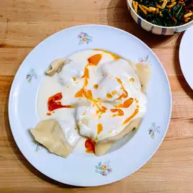

The best manti recipe

Homemade Manti (Traditional Turkish Dumplings)
This manti recipe takes a little time to prepare, but I'm sure you'll agree it's worth it!
Manti is a famous meal from my country. Afiyet olsun (bon appetit)!
Ingredients:
- 2 cups all-purpose flour, plus more for dusting
- ½ teaspoon salt
- 2 large eggs
- ½ teaspoon water, or as needed
- 2 onions, peeled
- ½ pound ground beef
- salt and pepper to taste
- 3 tablespoons vegetable oil
- 1 tablespoon red pepper flakes
- 1 (8 ounce) container plain yogurt
- 1 tablespoon minced garlic